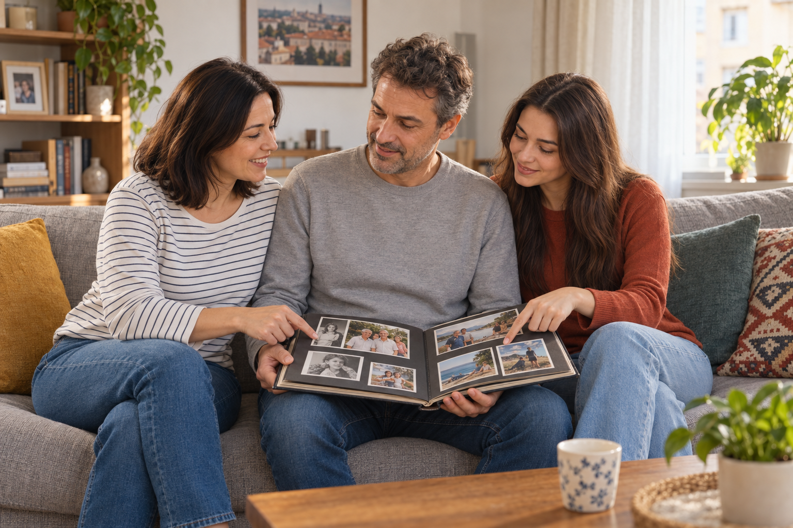

Ce vom putea face?
Continuăm povestea familiei Popescu și învățăm să explicăm relațiile de familie.
Duminică în familie

Încălzire
- Identifică părinții, copiii și bunicii.
- Cine este cel mai tânăr? Dar cel mai în vârstă?
- Descrie două persoane folosind câte două adjective.
De la imagine la cuvânt
Învață vocabularul în patru grupuri mici. Citește mai întâi româna, apoi verifică traducerea germană.Lerne den Wortschatz in vier kleinen Gruppen. Lies zuerst das rumänische Wort und kontrolliere dann die deutsche Übersetzung.
A. Familia apropiată · Die engste Familie
B. Familia extinsă · Die Großfamilie
C. Starea civilă și relațiile · Familienstand und Beziehungen
D. Adjective pentru descriere · Adjektive zur Personenbeschreibung
Lerne die Adjektive paarweise. Die Formen stehen in der Reihenfolge: männlich / weiblich.
Arborele familiei Popescu · Stammbaum
Posesivul, explicat pas cu pas
Citește regula și exemplele înainte de exerciții.Lies zuerst die Regel und die Beispiele. Danach folgen die Übungen.
Pasul 1: substantivul este articulat · Schritt 1: bestimmter Artikel
În română, posesivul stă după substantiv. Substantivul are de obicei articol hotărât:
| Fără articol | Cu articol + posesiv | Deutsch |
|---|---|---|
| frate | fratele meu | mein Bruder |
| soră | sora mea | meine Schwester |
| frați | frații mei | meine Brüder / Geschwister |
| surori | surorile mele | meine Schwestern |
Merke: Anders als im Deutschen steht das Possessivwort im Rumänischen nach dem Nomen: mein Bruder → fratele meu.
Pasul 2: meu, mea, mei sau mele? · Welche Form?
Forma se acordă cu persoana sau lucrul posedat, nu cu posesorul.
| Substantiv posedat | eu · mein/meine | tu · dein/deine | Exemplu |
|---|---|---|---|
| masculin singular | meu | tău | tatăl meu / tatăl tău |
| feminin singular | mea | ta | mama mea / mama ta |
| masculin plural | mei | tăi | frații mei / frații tăi |
| feminin plural | mele | tale | surorile mele / surorile tale |
Pasul 3: nostru și vostru · unser und euer/Ihr
| Masculin singular | Feminin singular | Masculin plural | Feminin plural | |
|---|---|---|---|---|
| noi | nostru | noastră | noștri | noastre |
| voi / dumneavoastră | vostru | voastră | voștri | voastre |
fiul nostru · unser Sohn | fiica noastră · unsere Tochter | copiii noștri · unsere Kinder
Pasul 4: lui, ei și lor · sein, ihr und ihr(e)
lui, ei și lor nu se schimbă după gen sau număr.
lui · sein/seine
fratele lui · sein Bruder
sora lui · seine Schwester
părinții lui · seine Eltern
ei · ihr/ihre
fratele ei · ihr Bruder
sora ei · ihre Schwester
părinții ei · ihre Eltern
lor · ihr/ihre
fiul lor · ihr Sohn
fiica lor · ihre Tochter
copiii lor · ihre Kinder
Cu un nume
mama Mariei · Marias Mutter
fratele lui Radu · Radus Bruder
Pasul 5: acordul adjectivului · Adjektivangleichung
Și adjectivul se acordă cu substantivul descris:
| Masculin singular | Feminin singular | Masculin plural | Feminin plural |
|---|---|---|---|
| unchiul meu simpatic | mătușa mea simpatică | unchii mei simpatici | mătușile mele simpatice |
| fiul nostru înalt | fiica noastră înaltă | fiii noștri înalți | fiicele noastre înalte |
Exemple complete · Vollständige Beispiele
Acesta este fratele meu mai mare. · Das ist mein älterer Bruder.
Aceasta este sora ei mai mică. · Das ist ihre jüngere Schwester.
Bunicii noștri energici locuiesc în Brașov. · Unsere tatkräftigen Großeltern wohnen in Brașov.
Mara se înțelege bine cu verișoarele ei simpatice. · Mara versteht sich gut mit ihren sympathischen Cousinen.
Cine este în fotografie?
Mara îi arată unui coleg albumul familiei.
Familia mea
În fotografie sunt bunicii mei, Ion și Maria. Ei sunt părinții tatălui meu. Bunicul meu este calm și glumeț, iar bunica mea este energică și foarte sociabilă. Lângă ei sunt părinții mei, Radu și Elena. Tatăl meu este înalt, iar mama mea are părul șaten.
Femeia din dreapta este mătușa mea, Ana. Ea este sora mamei mele și este necăsătorită. Fiul ei, Vlad, este vărul meu. Eu și Vlad avem aceeași vârstă și ne înțelegem foarte bine. Andrei, fratele meu, este mai tânăr decât noi. Familia noastră este mare și unită.
Dialog model
Exerciții interactive
Verifică posesivele, acordul și înțelegerea textului.
1. Alege varianta corectă
2. Completează
3. Relații de familie
Sora mamei mele este...
Fiul mătușii mele este...
Tatăl tatălui meu este...
Fiica părinților mei este...
Vorbește despre relații
Lucrează în perechi și folosește adjective posesive.
Albumul meu
Alege trei persoane din familia ta. Spune cine sunt și descrie-le.
Cine este?
Descrie o relație fără nume: „Este sora tatălui meu.” Colegul ghicește.
Asemănări
Cu cine semeni? Folosește: „Semăn cu…, pentru că am…”
Relații apropiate
Cu cine te înțelegi bine? Ce faceți împreună?
O persoană importantă
Scrie 80–100 de cuvinte.
Prezintă o rudă sau o persoană apropiată. Explică relația, descrie aspectul și caracterul și spune ce faceți împreună. Folosește minimum patru posesive și patru adjective.
Listă de control
Mini-test de final
5 întrebări · un punct pentru fiecare răspuns corect.
Rezolvă toate întrebările.